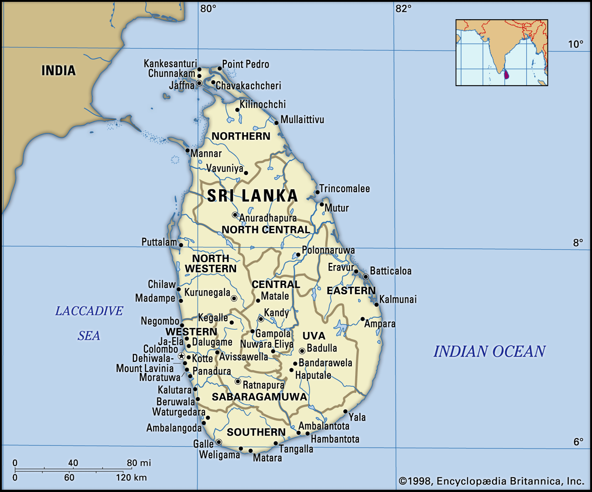
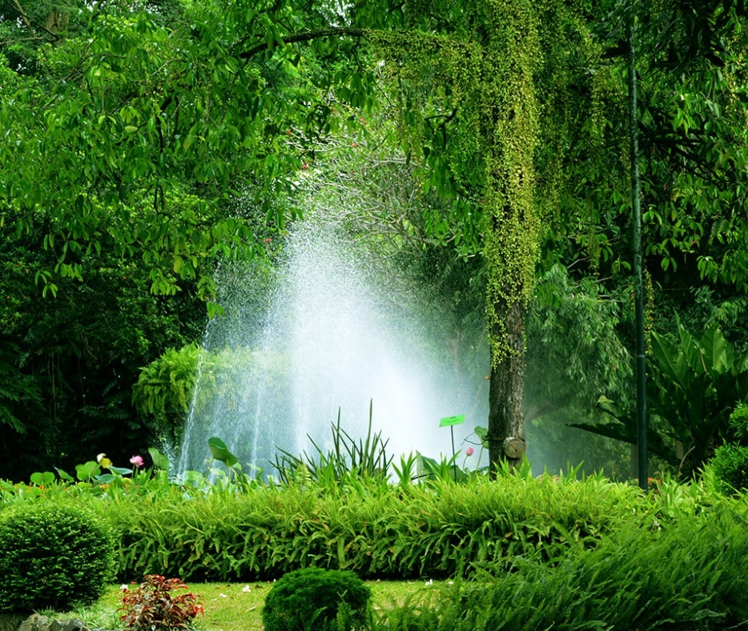
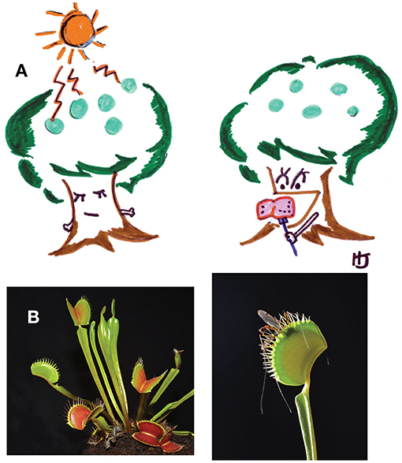

About Sri Lanka (The Paradise Island)

Sri Lanka, formerly known as Ceylon, and officially the Democratic Socialist Republic of
Sri Lanka, is an island country in South Asia. It lies in the Indian Ocean, southwest of
the Bay of Bengal, and southeast of the Arabian Sea; it is separated from the Indian
subcontinent by the Gulf of Mannar and the Palk Strait. Sri Lanka shares a maritime border
with India and the Maldives. Sri Jayawardenepura Kotte is its legislative capital, and
Colombo is its largest city and financial centre.
The earliest known Buddhist writings of Sri Lanka, known collectively as the Pāli canon, date to the fourth Buddhist council, which took place in 29 BCE.Sri Lanka's geographic location and deep harbors have made it of great strategic importance, from the earliest days of the ancient Silk Road trade route to today's so-called maritime Silk Road.Because its location made it a major trading hub, it was already known to both Far Easterners and Europeans as long ago as the Anuradhapura period.During a period of great political crisis in the Sinhalese kingdom of Kotte, the Portuguese arrived in Sri Lanka (largely by accident) and then sought to control the island's maritime regions and its lucrative external trade.
Today, Sri Lanka is a multinational state, home to diverse cultures, languages, and ethnicities. The Sinhalese are the majority of the nation's population. The Tamils, who are a large minority group,have also played an influential role in the island's history. Other long established groups include the:
- Moors
- Burghers
- Malays
- Chineese
- Indigenous Vedda
- Sinhala
- Tamil
- English
Welcome To The Dehiwala Zoo!

The Dehiwala National Zoo, which has a remarkable collection of exotic and indigenous fauna,is one of the oldest Zoos in Asia. The Zoo in Sri Lanka is widely known as Colombo Zoo all over the world.
Currently, Dehiwala Zoo houses 72 species of Mammals, 65 species of Birds, 31 species of Reptiles, 89 species of Fish, 03 families of Amphibians and 30 species of Butterflies etc. The total number of animals varies from 2500-3000 due to breeding and free living colonies of birds. Dehiwala Zoo has become famous among the visitors not only for collection of local and exotic animals but also for landscaping with lush greeneries. The Zoo supports and promotes conservation by breeding certain rare and endangered species through proper animal welfare.
Annually, over one and half million local and foreign tourists visit the Zoo. And over 2000 students and groups of students from schools and universities visit the Zoo for educational purposes. The Zoo is trying to keep the pace with the changing world. It has been involved in some major redevelopment programmes with the aim of enhancing the overall image of the Zoo while providing maximum facilities for animals and the visitors.
Read MoreIntresting Fact!
PLANTS THAT ARE ALSO ANIMALS

One of the most basic “laws” of science is that plants are plants and animals are animals. Right? Of course! Plants are green. They live using sunlight, carbon dioxide, and nutrients, making their own food through the process of photosynthesisThe process by which green plants and plant-like algae use sunlight, together with carbon dioxide and water, to make their own food.. In contrast, animals live by eating other organisms (plants, animals, bacteria, or even bits and pieces of dead organisms). Is this “law” of science correct? Not always! Going against this “law” are oceans full of microscopic organisms that can be both plant-like and animal-like at the same time! They photosynthesize and eat.
PhytoplanktonPlankton are drifting or floating organisms in the sea or in freshwater. Most are microscopic. When plant-like, they are called phytoplankton, and when animal-like, they are called zooplankton. Small-sized zooplankton are termed microzooplankton. are microscopic plant-like organisms that live in the water. Their name tells us that they live on light (phyto) and drift with the water (plankton). Every drop of water normally contains hundreds of thousands of these tiny, single-celled organisms. Phytoplankton are natural and important; they produce 50% of the oxygen in the air we breathe, and they are also food for fish and other animals in the ocean. There are many hundreds of different types of phytoplankton. For decades, most scientists have thought that phytoplankton lived only by photosynthesis. It turns out that many of these phytoplankton also eat the way animals do. Some eat other phytoplankton, some eat bacteria, and some eat tiny animals. Some of these mixotroph phytoplankton eat only reluctantly or rarely. Some are aggressive and can stuff themselves full of food! These mixotrophs grow much faster when they can eat and photosynthesize at the same time, compared with when they grow by photosynthesis alone.
Along with phytoplankton, there are other, tiny animal-like organisms in the ocean that are called microzooplanktonPlankton are drifting or floating organisms in the sea or in freshwater. Most are microscopic. When plant-like, they are called phytoplankton, and when animal-like, they are called zooplankton. Small-sized zooplankton are termed microzooplankton., because they are small (micro-), animal (zoo)like plankton. Microzooplankton eat lots of different things, but when they eat tiny phytoplankton, they can become part-time plants. How can they do this? One type of microzooplankton eats phytoplankton, but they do not digest the photosynthesizing machinery (the chloroplastsPhotosynthesizing apparatus in plants and marine phytoplankton. They keep the stolen chloroplasts and use these to photosynthesize! Can you imagine the broccoli you eat continuing to photosynthesize in your stomach after you ate it? Other “animal” mixotrophs eat lots of phytoplankton but do not digest them at all–they keep the intact phytoplankton within their bodies and drift in the oceans like microscopic greenhouses; they live off the photosynthesis from the still-growing phytoplankton they ate.
Read More